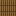
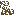

What the shears take
A trellis outlives the plant on it, which is the whole point of building one — and until now it wore last season's remains until something was sown over them. Shears take the debris off and leave the timber standing.
The remains had nowhere to go
When a season ends, a plant on a trellis dies where it stands. The sticks and the panels are not part of the plant — you built those — so they stay, wearing what died on them. That is deliberate: a trellis that had been full one day and spotless the next read as a harvest rather than a loss.
Getting rid of it was the problem. New growth clears a stick, and a field that sows itself puts the whole plot back in order, so a plot in use tidies itself. A trellis you were not about to sow did not: the only way to clear it was to knock the column down and build it again, which is a strange thing to have to do to a fence in your own garden.
 foot
foot middle
middle crown
crown
afterOne snip, one plant
One plant died, so one snip clears one plant's worth. A column is three blocks at most and it is walked from its foot, so it does not matter which of its sticks you clicked — the debris below comes off with the rest. Anything still alive in the column is left alone; a plant growing up through last season's remains is already clearing them itself.
A wall cannot be walked the same way. A dead panel remembers which cell of the plant died on it — which arm, which row — but not which way that plant ran, because the direction belongs to the plant and the plant is gone. So the box the debris came from is not something the wall can work back out. Touching debris is cleared instead: the snip spreads through dead panels that meet, and stops at anything else. A clean panel stops it, a living cell stops it, and the ordinary nine-cell patch a cucumber leaves goes in one click.
A wall a cucumber died on
Nine cells · one snip AutumnWinter
 Crop wall · kept, every cell
A run of vines that all died side by side is one stretch of touching
debris, so it clears together. Sixty-four panels is as far as a single snip goes — a dead
fence has no length limit and a click should not turn into thousands of blocks changing
at once. Hit that, and the next snip carries on where it stopped.
Crop wall · kept, every cell
A run of vines that all died side by side is one stretch of touching
debris, so it clears together. Sixty-four panels is as far as a single snip goes — a dead
fence has no length limit and a click should not turn into thousands of blocks changing
at once. Hit that, and the next snip carries on where it stopped.
What it costs
One point of durability, the shearing sound, and nothing else. No drops: dead growth is worth nothing wherever it sits — a dead crop in a field pays nothing when you break it either — and this is about getting the trellis back, not about being paid for the plant you lost.
Nothing is broken, either. The stick or the panel never leaves the world; the only thing that changes is whether it is wearing debris. Joins stay joined, a capped column stays capped, and the sticks in your hand are the ones you did not have to spend.
 Crop stick · never dropped, never respent
Creative costs nothing at all, and a snip that finds no debris — a clean
panel, a living plant, a stick that was never sown — does nothing and takes no durability
for it.
Crop stick · never dropped, never respent
Creative costs nothing at all, and a snip that finds no debris — a clean
panel, a living plant, a stick that was never sown — does nothing and takes no durability
for it.
In this release
Nothing to migrate
Dead growth was already a flag on the stick or the panel rather than a block of its own. A save does not know the difference, and there is nothing new to place.
The old routes still work
Sowing a stick clears it, a field that sows itself puts its whole trellis in order, and breaking the column still works. Shears are one more way, not a replacement.
Only the trellis
A dead crop standing in a field is unchanged — you break that one, the way you always have. Shears answer for growth that died on something you built.
The number caught up
0.5.1 shipped without its version being bumped, and the release the workflow builds fires on exactly that. This release sets it, so 0.5.2 is the first to be published by the route that was supposed to publish 0.5.1.